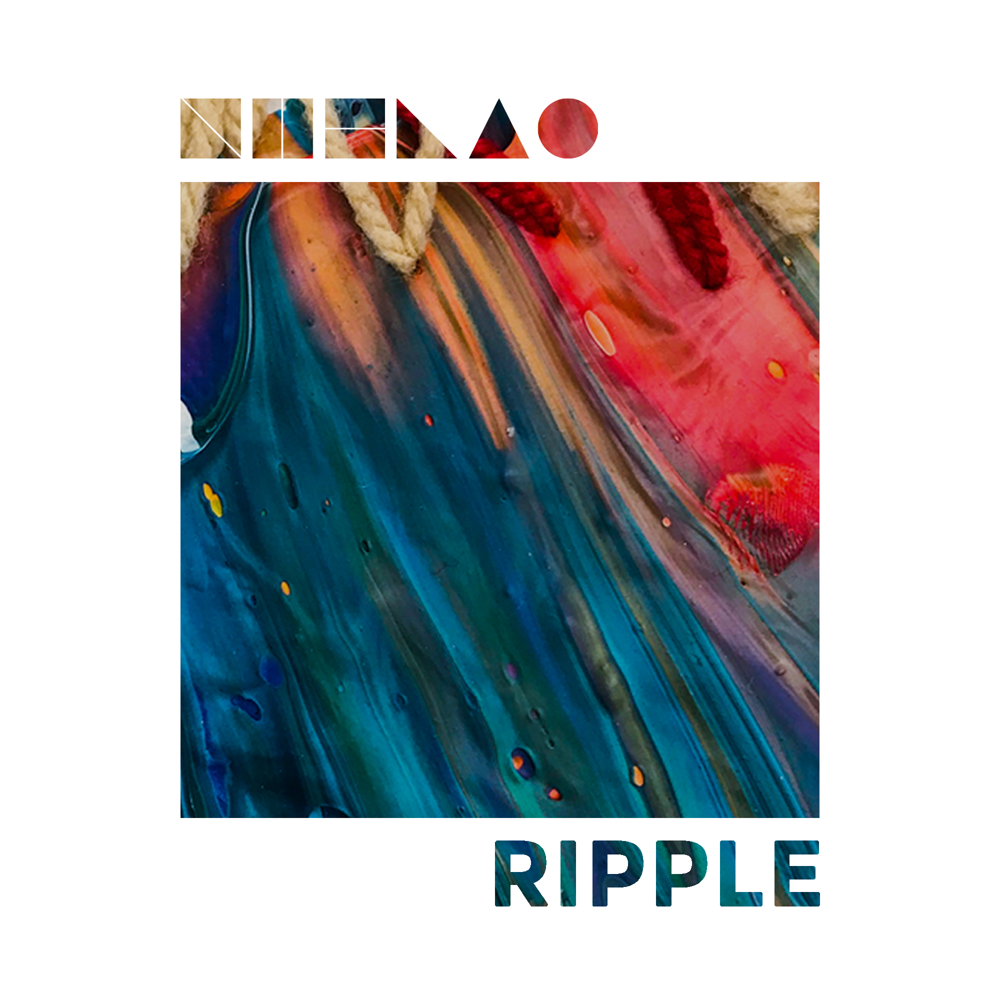

<!DOCTYPE html>

<html>
  <head>
    <link rel="shortcut icon" href="favicon.ico" type="image/x-icon">
  </head>

  <body>
    
  </body>
</html>
<head>
  <meta http-equiv="Content-Type" content="text/html;charset=UTF-8">
  <meta name="viewport" content="width=device-width, initial-scale=1">
  <link rel="stylesheet" href="./styles.css">
  <link rel="preconnect" href="https://fonts.googleapis.com">
<link rel="preconnect" href="https://fonts.gstatic.com" crossorigin>
<link href="https://fonts.googleapis.com/css2?family=Rubik+Vinyl&display=swap" rel="stylesheet">
<link rel="preconnect" href="https://fonts.googleapis.com">
<link rel="preconnect" href="https://fonts.gstatic.com" crossorigin>
<link href="https://fonts.googleapis.com/css2?family=Sriracha&display=swap" rel="stylesheet">
</head>
<body>
  <!--header-->
  <header>
    <nav id="nav">
      <div class="logo">
        
      </div>
      <ul>
        <li><a href="#music">music</a></li>
        <li><a href="#band">band</a></li>
        <li><a href="#contact">contact</a></li>
      </ul>
    </nav>
  </header>

  <!--main-->

  <main>
    <section id="music">
      <div class="music-cont">
        
        <div class="buttons">
          <a class="button" href="">Music</a>
          <a class="button" href="">Video</a>
        </div>
      </div>

            
    </section>
    
    <section id="band">
      <div class="description-cont">
        <p>A budapesti Nublao zenekar 2022 decemberében adta ki első lemezét. A testvérpár-kvartett (Pongor András és Pongor Márton ill., Kormos Balázs és Kormos-Mayer Bálint) 2018 óta működik jelenlegi felállásában, és a közös alkotásaik első fejezetére Ripple című albumukkal tesznek pontot.
          Zenéjük kezdetekben a gitár köré épült, mivel a zenekar tagok komoly- és könnyűzenei munkássága során ez a hangszer dominált. Időközben további hangszerekkel (billentyűs, ütős hangszerek) és elektronikus elemekkel bővítették zeneírási folyamatukat.
          A Ripple című album egy instrumentális kavalkád mindabból, amit a Nublao zenekar eddigi alkotása során közösen megélt. Az eredtileg gitártrióban megírt számokba a később csatlakozó Pongor Márton hozott elektronikus lüktetést, míg ez a folyamat megfordult, és azóta a stúdiót zenei játszótérré alakítva, a hangszerek egymás közti cserélgetésével hozzák létre újabb szerzeményeiket. 
          A Nublao zenekar 2018 óta számos önálló koncertet adott, műsoruknak helyszínéül legjobban szolgáló terekben, úgy mint galériában, köztéren vagy kávézókban, de ugyanúgy megfordultak klasszikus budapesti klubok színpadain, és nyári fesztiválon is. 
          A jövőben Ripple című albumukat - és további kiadatlan dalaikat előadják kisebb-nagyobb színpadokon, fesztiválokon, galériákban, ahol csak lehetőségük nyílik zenéjükkel betölteni a teret. Eközben pedig folyamatosan alkotnak tovább zenei műhelyükben, és csiszolják a legújabb Nublao számokat.
        </p>
      </div>

      <div class="pics-contener">
        <div class="pic-name">
          
          <span>Pongor András</span>
        </div>

        <div class="pic-name">
          
          <span>Pongor Márton</span>
        </div>
      

        <div class="pic-name">
          
          <span>Kormos-Mayer Bálint</span>
        </div>
      

        <div class="pic-name">
          
          <span>Kormos Balázs</span>
        </div>
      </div>

    </section>

  </main>

  <!--footer-->
  <footer>

    <section id="contact">

      <p>nublaomusic@gmail.com</p>

    </section>
    
  </footer>
</body>